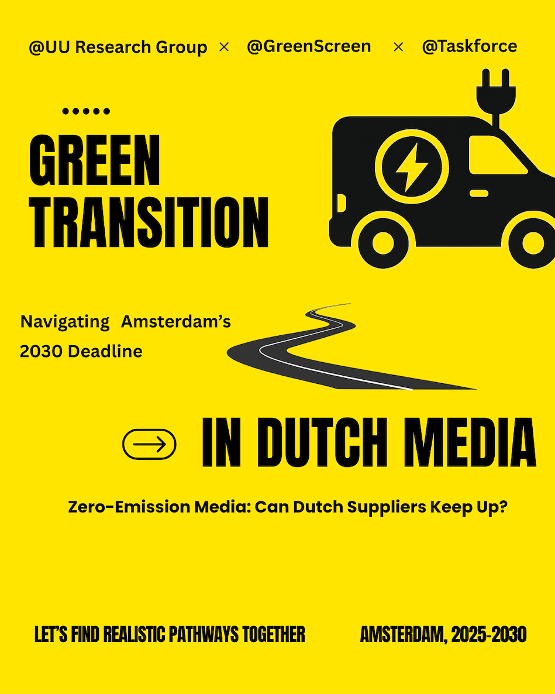
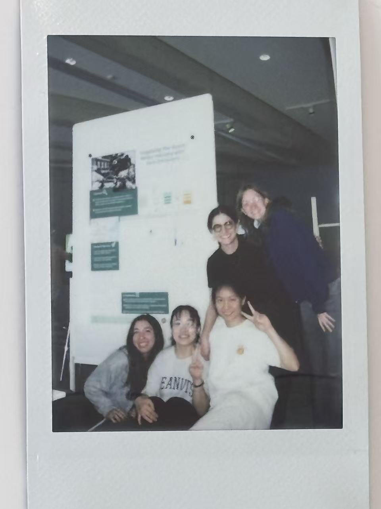

Supplying the Dutch Media Industry with Zero Emissions
Can 92 vehicles from 9 suppliers actually hit zero-emission targets by 2035 without losing money?
Quantitative modelling & data processing · Mar 2025 – Jul 2025 · team of 6

Promo graphic delivered to the client
Background
A real client project for BFF, the Dutch media-industry vehicle-fleet association, and the GreenScreen sustainability initiative. The job: work out whether and how media-industry supplier fleets can meet Amsterdam's 2030 zero-emission zone rules.
What I did
Designed and ran a fleet survey across 9 suppliers and 92 vehicles, then cleaned and structured the resulting dataset.
Built a three-scenario Excel financial model (business-as-usual, full electrification, phased transition), projecting emissions and cost through 2035, with formulas covering Scope 1/2 emissions, depreciation and residual value.
Sourced real market parameters (EV prices €28K to €330K, diesel price €1.604/L) and delivered a model the client could reuse and adjust themselves.

Team photo
Only 6.5% is in the zone.Of the 92 vehicles surveyed, driving roughly 1.21 million km a year, only 6.5% of their range currently falls inside Amsterdam's zero-emission zone. That gap is what the three-scenario model puts a real cost on.
Result
That number is a clear illustration of the scale and time pressure the industry is facing, and it gives the client a basis for comparing what each transition path would actually cost them.